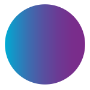
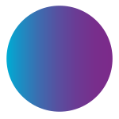

WHO, WHAT, WHY
WHAT is V-Con?
V-Con is an experience that is often equated with the words unbelievable, magical, and life-changing. Held in nine different countries since its conception in 2001, the V-Convention is an annual grand gathering hosted by The V, where you can expect a series of world-class motivational speeches and training sessions that are essential for professional networkers. State-of-the-art exhibitions are also set up for those who wish to get exclusive merchandise, know more about products, and avail of special promos.


WHO goes to V-Con?
It is open to all IRs of QNET who wish to gain a better sense of their network marketing journey. To date, V-Con has gathered thousands of attendees from different parts of world, with record-breaking numbers to boot.
WHY do you need to be at V-Con?
As a partner who will be with you throughout your network marketing journey, The V aims to maximize this 5-day convention to help you claim your ultimate goal of gaining financial freedom. Whether you just signed up or have been in the business for several years, you have no better decision but to come home to V-Con and realize your limitless potential for greatness.